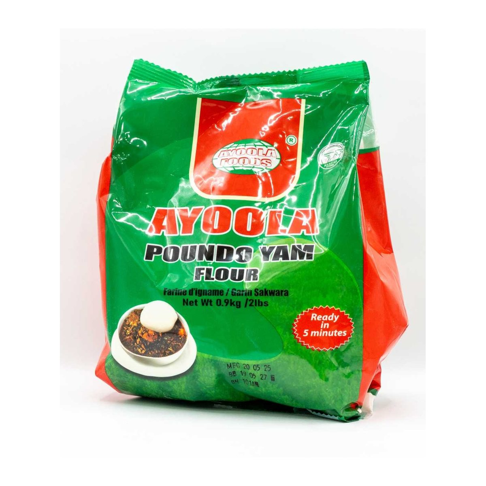

A familiar taste.
A closer connection.
Nigerian groceries for homes, families and businesses in the UK and Europe.
Who We Are
Oringo Distributions is a dedicated importer and distributor of authentic ethnic food and beverages. We specialize in sourcing high-quality goods that celebrate cultural heritage, with a focus on bringing the rich flavors and traditions of Nigeria (and beyond) to homes, retailers, and restaurants.
From traditional staples like Garri, Elubo, and Palm Oil to specialty spices and snacks, our mission is to connect communities with the tastes they love, while ensuring quality, reliability, and excellent service every step of the way.
With a deep commitment to cultural heritage and customer satisfaction, we proudly serve as a vital link between home and diaspora communities. We are dedicated to bringing the rich flavours, traditions, and heritage of Nigeria and West Africa to homes, communities, retailers, and restaurants across the UK.

Our Products
We carefully source premium-quality items — from traditional staples like Garri, Elubo, Honey Beans, Grains, and Palm Oil to beverages, spices, seasonings, body care essentials, and cultural accessories.
Our Mission
Our mission is to connect the diaspora with the tastes they love while ensuring reliability, consistency, and exceptional customer satisfaction. With a passion for cultural heritage and excellence, Oringo Distributions serves as a bridge between home and the global community.

Our Values
We believe in preserving cultural identity through food. Every product we distribute carries the authentic taste of home, helping families and communities stay connected to their roots while building new lives in the UK.
Our Commitment
Quality Assurance
Every product meets our stringent quality standards before reaching your hands
Reliable Distribution
Timely delivery and consistent supply for retailers and bulk orders
Cultural Bridge
Connecting the UK diaspora with authentic products from home
Customer Focus
Dedicated to exceptional service and customer satisfaction
Ready to Experience Authentic Nigerian Products?
Contact us today for bulk orders and inquiries
Get In Touch